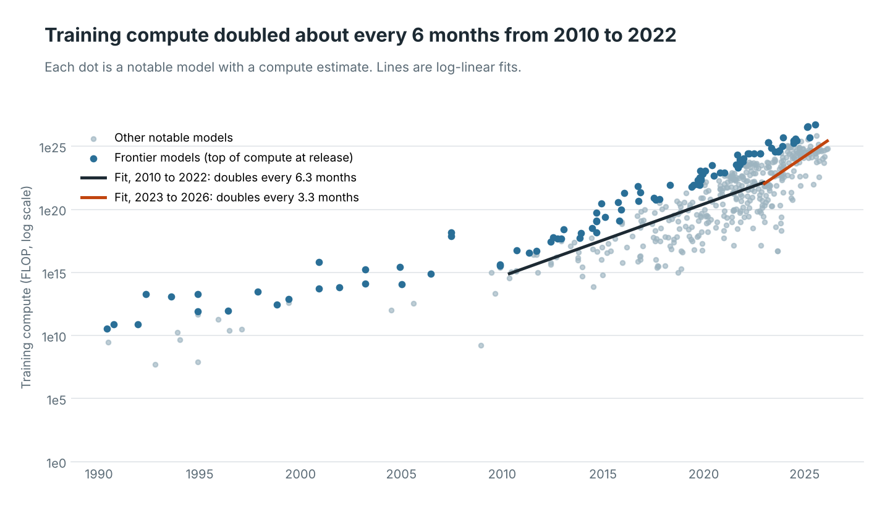
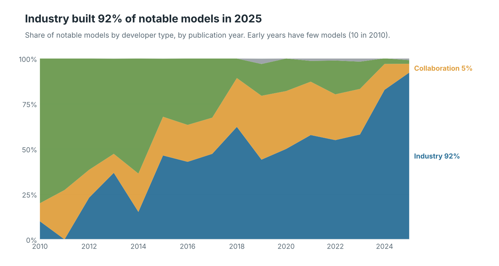
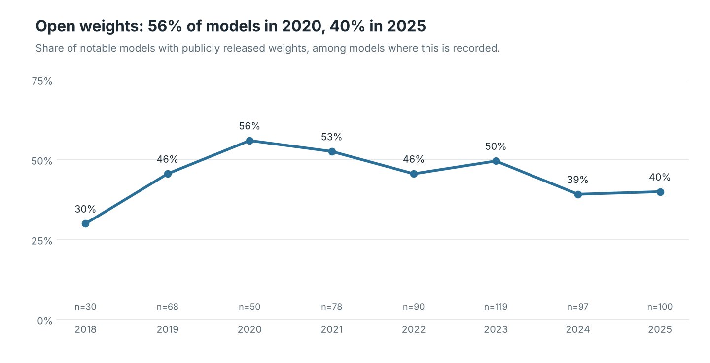
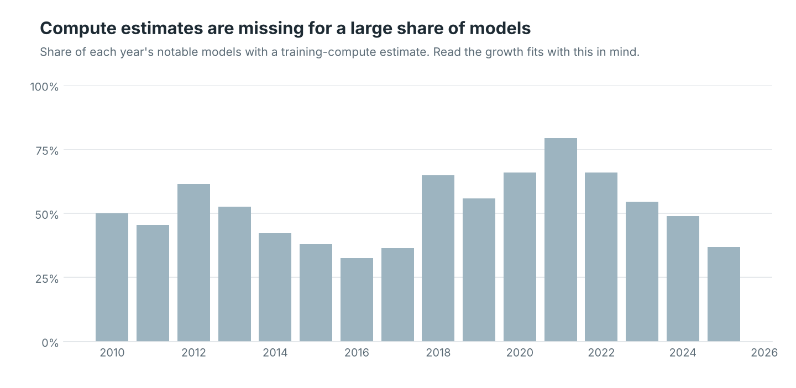
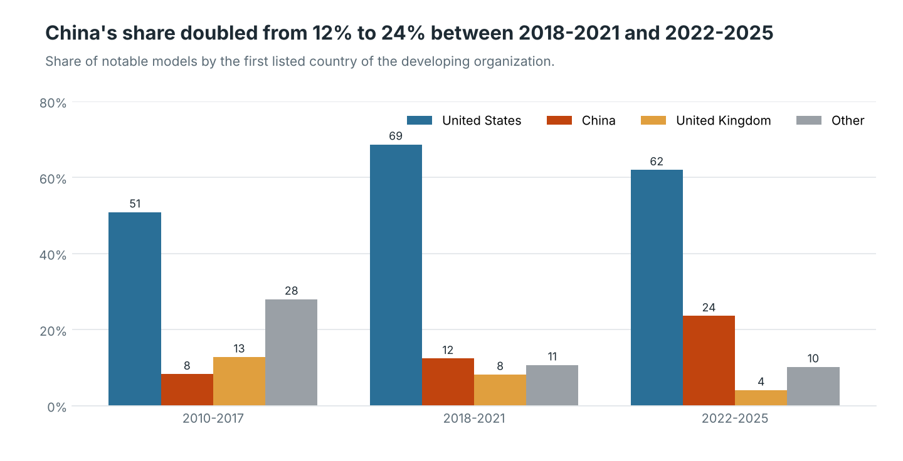

Who builds frontier AI?
A SQL and Python analysis of 1,011 notable AI models from Epoch AI: how fast training compute grew, which sectors build the models, and how open they are.
1. Compute grew by orders of magnitude

From 2010 to 2022, training compute doubled about every 6.3 months (95% bootstrap interval 5.8 to 6.9, 306 models), roughly 3.7× per year. Before 2010 the doubling time was about 20 months. Models that were at the frontier of compute when released doubled every 5.4 months.
| Group | Models | Doubling time (months) | 95% interval | Growth per year |
|---|---|---|---|---|
| Before 2010 | 62 | 20.5 | 16.9 to 25.5 | 1.5× |
| 2010 to 2022 | 306 | 6.3 | 5.8 to 6.9 | 3.7× |
| 2023 to 2026 (partial) | 153 | 3.3 | 2.7 to 4.5 | 12.1× |
| Frontier models, 2010 on | 71 | 5.4 | 5.2 to 5.7 | 4.6× |
The largest run in the data is Grok 4 (xAI, 2025) at about 5.0 × 1026 FLOP. Of the 179 models with a cost estimate, the costliest is Grok 4 at roughly $388 million (2023 USD).
2. Industry took over

Academia built 32% of notable models in 2015, but only 2% in 2025. Industry alone built 92%, and industry-academia collaborations 5%. The earliest years have few models each, so read the direction and not single points.
3. Openness is lower where industry leads

Among models where Epoch records weight availability, the open share was 56% in 2020 and 40% in 2025. From 2022 to 2025, 33% of industry-built models had open weights (290 models), compared with 70% for academia (40) and 69% for collaborations (71). Sector and year are mixed together here, so this describes the pattern and does not isolate a cause.
4. How complete is the compute data?

Only 521 of 1,011 models (52%) have a compute estimate, and coverage varies a lot by year. Labs that publish less about their models make estimation harder, so missing values are probably not random. Every growth rate above describes models with estimates only.
5. Where the models come from

US-based developers account for 62% of notable models from 2022 to 2025. China rose from 12% in 2018 to 2021 to 24% in 2022 to 2025. Country is the first one listed for the developing organizations, which simplifies multinational teams.
Method and limits
- Data. Epoch AI's notable AI models table (1,011 rows, 1950 to 2026; 18 models in 2026, a partial year). It is released under CC BY 4.0. The copy in this repo is a snapshot taken from a public GitHub mirror, not downloaded from Epoch directly, so it may differ from Epoch's current release. See data/README.md.
- Notable is Epoch's judgment. The dataset does not cover every model, and its inclusion rules shape every share shown here.
- Growth fits. Ordinary least squares of log2 compute on publication date. Intervals come from a 2,000-draw bootstrap over models with a fixed seed. They capture sampling noise only, not estimate error or selection. Era boundaries (2010, 2023) are my choices.
- Shares count models, not importance. A frontier model and a small research model each count once.